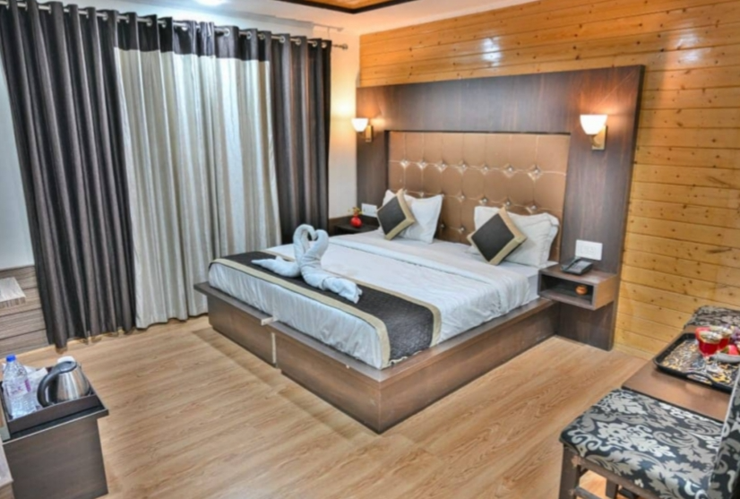
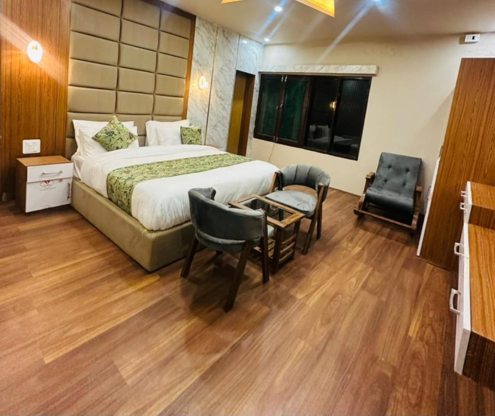
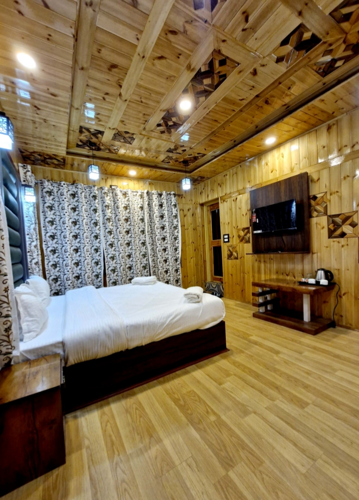
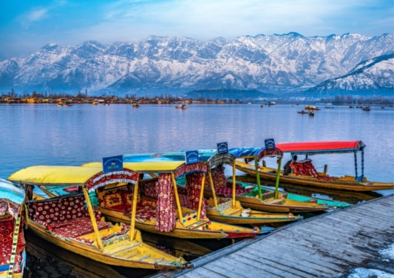
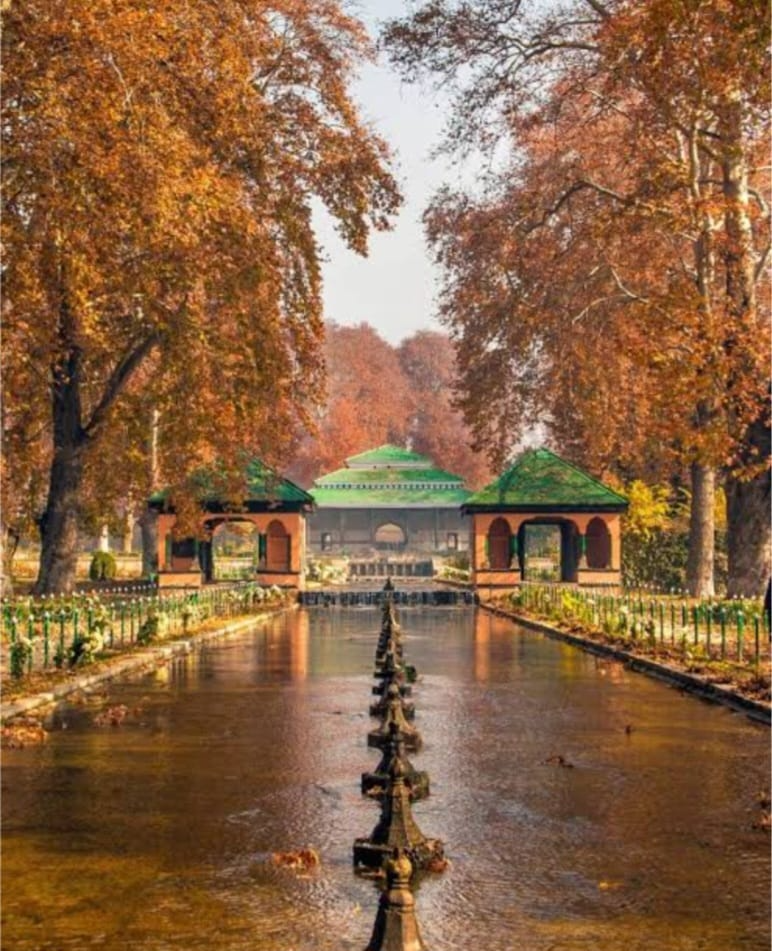
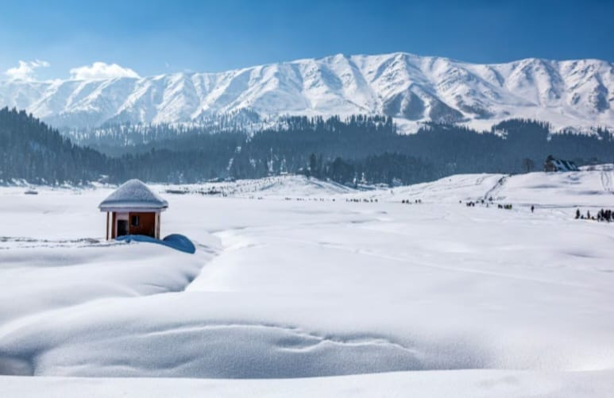
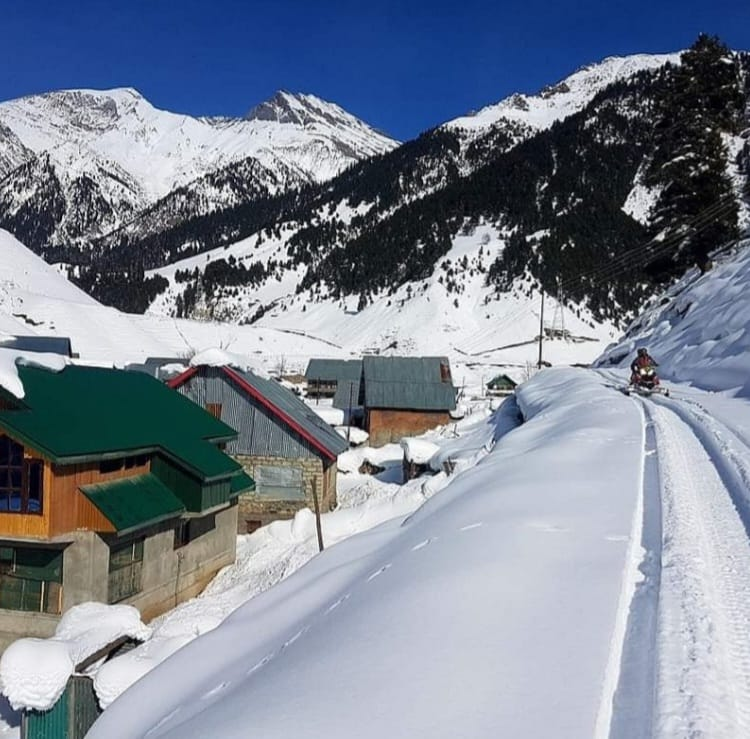

JNRS
JNRS
JNRS
JNRS
“Gar Firdaus bar-rue zamin ast, hami asto, hami asto, hamin ast”
Nestled in the breathtaking valleys of Kashmir, JNRS Royal Park Resort Srinagar and JNRS Wooden Cottage Pahalgam offer more than just a stay—they offer an experience wrapped in nature and timeless beauty.
Wake up to the calm reflections of Dal Lake or the refreshing mountain breeze of Pahalgam’s pine forests. Whether seeking a romantic getaway or a family retreat, JNRS promises warm hospitality and unforgettable views.
For Reservations
+91 9321235958JNRS Royal Park Resort Srinagar



JNRS Wooden Cottage Pahalgam

Attractions
Dal Lake is a scenic, 18-sq-km urban lake in Srinagar, Kashmir, known as the "Jewel in the Crown of Kashmir". Famed for its iconic houseboats and shikara boat rides, it features a unique floating market, Mughal gardens, and stunning mountain views. The lake is a hub for tourism, offering year-round beauty, including freezing temperatures in winter, and is surrounded by a lively boulevard.

ATTRACTIONS
The celebrated Mughal gardens of Kashmir owe their grandeur primarily to Emperor Jahangir who had an undaunted love for Kashmir, and his son Shah Jahan. Jahangir was responsible for the careful selection of the site and manoeuvring it to suit the requirements of the traditional paradise gardens. Although the Mughals never deviated drastically from the original form or concept of the gardens, their biggest challenge in Kashmir was to exploit the chosen site and the abundance of water resource to its maximum potential. The sites selected were invariably at the foot of a mountain, wherever there was a source of water either in the form of streams or springs. This feature eventually resulted in terraced garden layouts. Undaunted by the challenges offered by mountainous terrain, the Mughal engineering skills and aesthetics helped in exploiting the dominating natural landscape and the available water resources to their maximum potential and achieved an unparalleled height of perfection.

Attractions
Gulmarg, known as the "Meadow of Flowers" in Jammu and Kashmir, is world-famous as a premier skiing destination and home to one of the highest cable cars, the Gulmarg Gondola. Situated at nearly 3,980 meters, it offers breathtaking Himalayan views, the highest green golf course in the world, and vibrant summer wildflower meadows, making it a popular year-round destination.

ATTRACTIONS
Betaab Valley, nestled in the enchanting region of Kashmir, is a destination that epitomizes natural beauty and serenity. Its lush meadows, crystal-clear streams, and snow-capped peaks create a picturesque setting that has captured the hearts of travelers from across the globe. Whether you’re exploring Kashmir Betaab Valley in the vibrant summer or during its magical winters, this valley promises an unforgettable experience. Let’s dive into all you need to know about Betaab Valley, from its best visiting seasons to the weather and activities you can enjoy here.

Attractions
Sonamarg, known as the "Meadow of Gold," is a stunning hill station in Jammu and Kashmir's Ganderbal district, situated at 2,740m above sea level. Renowned for the Thajiwas Glacier, alpine meadows, and scenic trekking trails, it serves as a gateway to Ladakh. Key activities include hiking, pony rides, and visiting lakes. Thajiwas Glacier: Famous for snow even in summer, accessible via hiking or pony rides. High-Altitude Lakes: Known for trekking to lakes like Krishnasar, Vishansar, and Gangabal.
In the paradise of Kashmir—where summers glow, winters sparkle with snow, and every occasion becomes magical—your story begins here.